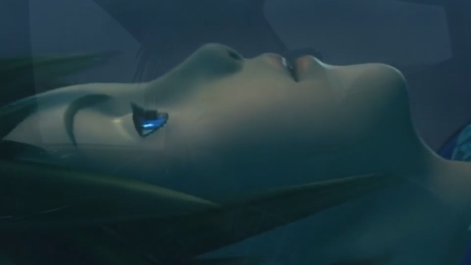

Hello! I am Luke Alcazar and would like to say welcome to my profile!
Some basics about me is that I really enjoy Computer Science
as well as Graphic Design which is the focus of this profile.
I am currently a Senior at Bradley University!
I am studying Computer Science and Game design!
I know hwo to use Java, CSS, C++, C#, python
as well as using the unity engine and swift!
Now onto the fun stuff!
This photo on the left is actually something that I made!
It is a combination of two games that are 14 years apart!
Each weapon in that photo is actually a different picture
I had to seperate them each one at a time
sometimes I even had to take them out of hands!
I made this in photoshop, I also have experience with
many other adobe programs!
I have used illustrator, I have also done quite a bit
of video editing! Like the photo below this!
I had two different video and audio overlays
